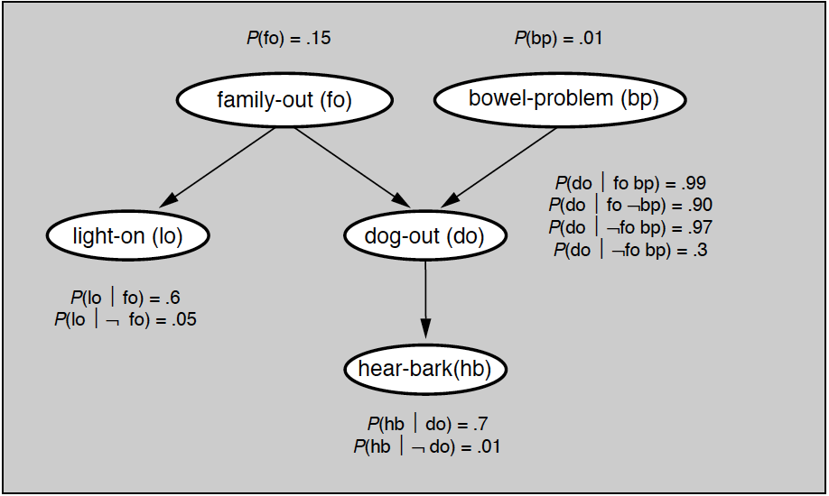
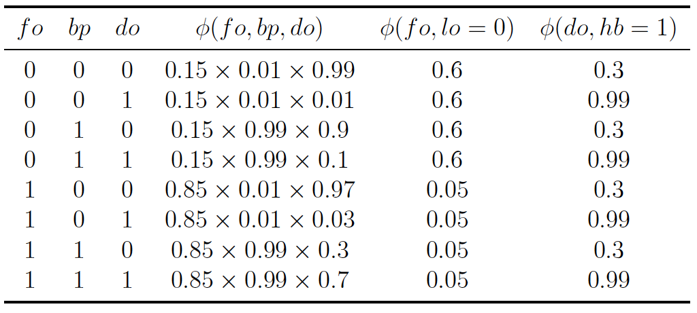
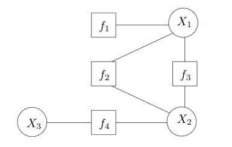
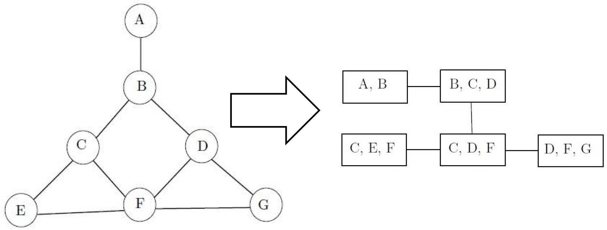
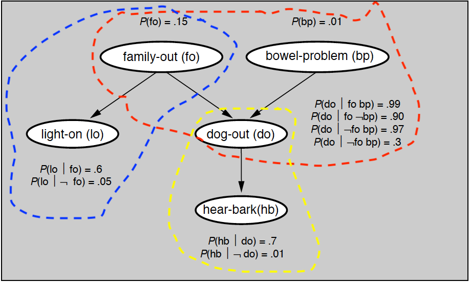
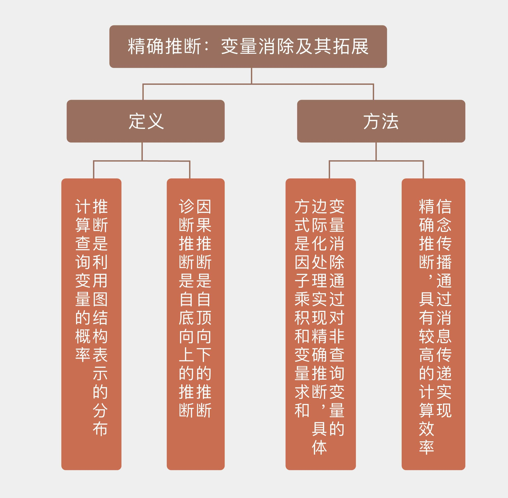

- 00 开篇词 打通修炼机器学习的任督二脉.md.html
- 01 频率视角下的机器学习.md.html
- 02 贝叶斯视角下的机器学习.md.html
- 03 学什么与怎么学.md.html
- 04 计算学习理论.md.html
- 05 模型的分类方式.md.html
- 06 模型的设计准则.md.html
- 07 模型的验证方法.md.html
- 08 模型的评估指标.md.html
- 09 实验设计.md.html
- 10 特征预处理.md.html
- 11 基础线性回归：一元与多元.md.html
- 12 正则化处理：收缩方法与边际化.md.html
- 13 线性降维：主成分的使用.md.html
- 14 非线性降维：流形学习.md.html
- 15 从回归到分类：联系函数与降维.md.html
- 16 建模非正态分布：广义线性模型.md.html
- 17 几何角度看分类：支持向量机.md.html
- 18 从全局到局部：核技巧.md.html
- 19 非参数化的局部模型：K近邻.md.html
- 20 基于距离的学习：聚类与度量学习.md.html
- 21 基函数扩展：属性的非线性化.md.html
- 22 自适应的基函数：神经网络.md.html
- 23 层次化的神经网络：深度学习.md.html
- 24 深度编解码：表示学习.md.html
- 25 基于特征的区域划分：树模型.md.html
- 26 集成化处理：Boosting与Bagging.md.html
- 27 万能模型：梯度提升与随机森林.md.html
- 28 最简单的概率图：朴素贝叶斯.md.html
- 29 有向图模型：贝叶斯网络.md.html
- 30 无向图模型：马尔可夫随机场.md.html
- 31 建模连续分布：高斯网络.md.html
- 32 从有限到无限：高斯过程.md.html
- 33 序列化建模：隐马尔可夫模型.md.html
- 34 连续序列化模型：线性动态系统.md.html
- 35 精确推断：变量消除及其拓展.md.html
- 36 确定近似推断：变分贝叶斯.md.html
- 37 随机近似推断：MCMC.md.html
- 38 完备数据下的参数学习：有向图与无向图.md.html
- 39 隐变量下的参数学习：EM方法与混合模型.md.html
- 40 结构学习：基于约束与基于评分.md.html
- 如何成为机器学习工程师？.md.html
- 总结课 机器学习的模型体系.md.html
- 总结课 贝叶斯学习的模型体系.md.html
- 结课 终有一天，你将为今天的付出骄傲.md.html
- 捐赠
35 精确推断：变量消除及其拓展
在前面的几讲中，我和你分享了概率图模型中的一些代表性模型，它们都属于表示（representation）的范畴，将关系通过结点和有向边精确地表示出来。接下来，我们将对概率图模型的推断任务加以介绍。
推断（inference）是利用图结构表示的联合分布来计算某个变量的概率，得到关于目标问题的数字化结论。在概率图模型中，因子分解与条件独立性这两大法宝可以大量节约概率运算，给推断问题带来简洁高效的解法。
概率图中的推断可以分为两类：精确推断和近似推断。精确推断（exact inference）是精确计算变量的概率分布，可以在结构比较简单的模型中实现；近似推断（approximate inference）则是在不影响推理正确性的前提下，通过适当降低精度来提高计算效率，适用于结点数目多、网络结构复杂的模型。在这一讲中，我们先来分析精确推断。
精确推断最基本的方法是变量消除（variable elimination），这种方法对“与待求解的条件概率无关的变量”进行边际化处理，也就是将中间变量约掉，从而计算出目标概率。变量消除的基本思想可以通过贝叶斯网络中所举的例子来解释，问题对应的贝叶斯网络如下图所示，所有的先验概率与条件概率都在图中给出。

贝叶斯网络实例
如果要用变量消除法计算变量\(hb\)的分布，就得把除\(hb\)之外的所有变量挨个消除。由于变量\(bp\)只和另一个变量\(do\)相关，所以以它作为突破口是个不错的选择。将所有和变量\(bp\)相关的因子相乘，再对变量\(bp\)求和，就可以算出一个新因子
\[ \\psi_1 (fo, do) = \\sum\\limits_{bp} p(bp) p(do | fo, bp) \]
除了\(bp\)之外，另一个根结点是\(fo\)。它会同时直接影响\(lo\)和\(do\)，所以在计算因子时需要将这两个变量都考虑进来。\(fo\)与\(do\)的关系已经由上面计算出的新因子所定义，与\(lo\)的关系则是纯粹的条件概率，两者结合可以表示为另一个新因子
\[ \\psi_2 (do, lo) = \\sum\\limits_{fo} \\psi_1 (fo, do) p(fo) p(lo | fo) \]
变量\(lo\)只出现在新因子\(\\psi_2\)中，消除这个变量的结果就是只和变量\(do\)有关的因子\(\\psi_3(do) = \\sum_{lo} \\psi_2 (do, lo)\)求和。最后，根据\(do\)与\(hb\)之间的关系可以将变量\(do\)消除掉，获得最终的结果
\[ p(hb) = \\sum\\limits_{do} \\psi_3(do) p(hb | do) = \\sum\\limits_{do} p(hb | do) \\sum\\limits_{lo} \\sum\\limits_{fo} p(fo) p(lo | fo) \\sum\\limits_{bp} p(bp) p(do | fo, bp) \]
从上面的过程可以看出，变量消除的过程就是不断对中间变量穷举并求和（variable summation），整个过程通过对因子的操作实现。因子（factor）的概念在马尔可夫随机场一讲中有过介绍，在这里就不重复了。如果在目标变量\(\\bf X\)和单个中间变量\(Y\)上共同定义出因子函数\(\\phi ({\\bf X}, Y)\)，那么对\(Y\)的穷举求和就可以表示为\(\\psi ({\\bf X}) = \\sum_Y \\phi ({\\bf X}, Y)\)，也就是对因子函数的边际化（factor marginalization）。
如果随机变量\(Y\)在多个因子\(\\phi_1 ({\\bf X}, Y), \\phi_2 ({\\bf Z}, Y), \\cdots\)中都出现的话，就需要综合考虑这个变量的整体作用，也就是将所有包含这个公共变量的不同因子相乘（factor multiplication）。这样做相当于将单个变量“孤立”出来，它产生的所有影响都体现在因子函数的乘积之中，对所有因子函数的乘积统一进行边际化就可以彻底消除变量\(Y\)的所有影响。
将上面两个步骤结合起来，就可以得到变量消除的完整过程。变量的消除根据变量之间的依赖关系，按照从简单到复杂的顺序完成。
在选定一个待消除的变量后，首先要找到和这个变量有关的所有因子函数，将它们相乘以得到对变量影响方式的完整描述，再对这个变量在不同取值下的联合概率求和，以计算将它消除之后的边缘概率。按照这样的顺序将所有中间变量消除后，就可以计算出想要的边际概率了。
不难看出，这样的的求解方法建立在“因子乘积-变量求和”的步骤上，因而被称为和积变量消除（sum-product variable elimination）。
前面介绍的都是利用变量消除来进行因果推断，也就是解决解释问题。那么这套方法能不能用来由果推因呢？当然可以！还是以上面的贝叶斯网络为例，在前面我曾直接给出结论，在灯亮但狗没叫时，家里有人和没人的概率是一半一半。那么这个概率究竟是怎么计算出来的呢？
这个问题实际上求解的是后验概率\(p(fo = 0 | lo = 0, hb = 1)\)。由于两个观察变量lo和hb并不存在子结点，它们所定义的因子\(\\phi (fo, lo)\)和\(\\phi (do, hb)\)就只包含和自身相关的条件概率。而贝叶斯网络中的其他3个变量共同构成了汇连结构，要将它们和观察变量区分开来，不妨用这三者共同定义出另一个因子\(\\phi (fo, bp, do)\)。由于两个观察变量具有确定的结果，因此在计算因子的关系时，只需要考虑\(lo = 0, hb = 1\)的情形。这样就可以将所有因子以列表形式表示出来。

可以看出，上面的因子表格中的左侧3列涵盖了3个未知变量所有可能的取值，第4列则给出了对应的因子函数值。在执行变量消除时，首先要进行因子相乘，也就是计算每一行里所有概率的乘积，这相当于求解在这个贝叶斯网络中出现\(lo=0, hb=1\)的所有可能性。由于问题问的是查询变量\(fo\)的分布，在求和时就需要对中间变量\(bp\)和\(do\)进行求和，也就是边际化处理。
具体做法是将所有\(fo = 0\)所在行的因子乘积求和，得到联合概率\(p(fo = 0, lo = 0, hb = 1)\)；再将所有\(fo = 1\)所在行的因子乘积求和，得到联合概率\(p(fo = 1, lo = 0, hb = 1)\)。利用贝叶斯定理进行归一化后就可以求出，后验概率\(p(fo = 0 | lo = 0, hb = 1) = 0.5006\)，这和贝叶斯网络一讲中计算出的结果是完全一致的。
在预测问题中，已知的\(lo=0\)和\(hb=1\)被称为证据（evidence）。基于证据的推断本质上是计算非归一化的联合分布\(p(fo, lo = 0, hb = 1)\)，利用贝叶斯网络的性质可以证明，这个分布其实是个吉布斯分布，起到归一化作用的常数\(p(lo = 0, hb = 1)\)则可以看成是约化因子（reduced factor）。
基于和积的变量消去算法实际是利用了乘法对加法的分配律，将对多个变量的积的求和分解为对部分变量交替进行的求积与求和。如果图模型的规模较小，结点的数目较少，直接利用全概率公式进行求和或求积分，就可以计算出每个结点的边缘概率。但当结点数目增加时，和积变量消去的计算量会以指数形式增长。从运算效率的角度对变量消去加以改进，得到的就是置信传播算法。
置信传播（belief propagation）也是精确推断的算法，它将图模型中每个节点的概率分布传递给相邻的节点，以此影响相邻节点的概率分布状态，经过一定次数的迭代，每个节点的概率分布将收敛到一个平稳分布。这种算法适用于包括贝叶斯网络和马尔可夫随机场在内的所有概率图模型，但今天我将以一种新的模型——因子图为例来说明它的原理。
因子图（factor graph）是一类二分图，用来表示对函数的因子分解，其中的结点分为变量结点（variable node）和因子结点（factor node）两种，相关的结点之间则由无向边连接。假定一个因子图表示的是函数\(g(x_1, x_2, x_3) = f_1(x_1)f_2(x_1, x_2)f_3(x_1, x_2)f_4(x_2, x_3)\)，那它的结构就如下图所示。因子图能够更加直观地刻画函数的可分解性，贝叶斯网络和马尔可夫随机场也都可以表示成因子图。

因子图示例（图片来自维基百科）
置信传播算法的核心概念是消息（message），它是结点之间信息流动的载体。在因子图中，从变量\(v\)到因子\(a\)的消息是来自除\(a\)之外所有与\(v\)相邻因子的消息乘积，如果\(v\)没有除\(a\)之外其他的邻接因子，其消息就被设置为均匀分布。
反过来，从因子\(a\)到变量\(v\)的消息就复杂一些，它先要对除来自\(v\)外，进入\(a\)的所有变量消息相乘，再对乘积边际化掉所有除\(v\)之外和\(a\)邻接的所有变量，这在本质上和变量消除的和积算法是一致的。每个变量的置信度就是根据这样的准则在图结构中往返流动，不断更新。
如果经过多轮迭代后，图模型的因子收敛到稳态，这时就可以计算单个结点的边际概率。每个结点的边际概率都正比于和它相邻的所有因子传递给它的消息的乘积，归一化处理后就可以得到真正的概率。一个因子所包含的所有变量的联合边际分布则正比于因子函数本身和来自这些变量的消息的乘积，和单个结点一样，这个值也需要归一化处理。
置信传播算法在理论上并不保证对所有图结构都能收敛，但当图模型具有树结构时，计算出的概率分布一定会收敛到真实值，从而实现精确推断。无环图天然地具有树的特性，可即使原始的图中存在有向或者无向的环路结构，也可以通过让变量聚集成不同的团来生成类似树的结构，这种结构就是团树。
团树（clique tree）也叫联结树（junction tree），是一种通过变量连接的结构。其特点是如果一个变量出现在树结构的两个团中，那它就一定会出现在连接这两个团的路径上的所有团中。
这样看来，每个相连的团都像是古时候的驿站，它们的公共变量则是信使。在传递消息时，首先要在团树中选出一个根结点，从这个根结点出发构造出一棵树。根节点通常是包含待查询的目标变量的团，以此作为消息传递的枢纽，生成的树则是传递消息的道路网。

马尔可夫随机场及其团树示例（图片来自维基百科）
消息的传递需要经过两个步骤：第一个步骤是收集（collection），指的是所有叶结点向根结点传递消息，直到根结点收到所有邻接结点的消息，这是消息汇总的过程；第二个步骤是分发（distribution），指的是根结点向叶结点传递消息，直到所有叶结点均收到消息，这是消息更新的过程。这样的一来一回之后，团树的每条边上都有不同方向的两条消息，基于这些消息就能计算出所有变量的边际概率。
和变量消除相比，置信传播的优势在于提升了计算效率。变量消去算法的缺点在于一次变量消去只能求出本次查询变量的条件分布，不同的查询将带来大量的重复计算。在团树中流动的每个消息都相当于对一组关联因子的封装，查询不同变量时只需调用相关的封装就可以了，从而避免了复杂的重复运算。
在pgmpy中，团树被定义为models模块中的JunctionTree。利用BayesianModel类中的to_junction_tree函数可以将现有的贝叶斯网络转换成团树，转换出的团树就可以使用inference模块中的BeliefPropagation类来求解。用团树和置信传播求解上面的例子，可以得到与对贝叶斯网络进行变量消除一致的结果。

贝叶斯网络的团划分
今天我和你分享了对概率图模型的精确推断，包含以下四个要点：
推断是利用图结构表示的概率分布计算查询变量的概率，可以分为精确推断和近似推断；
变量消除通过对非查询变量的边际化处理实现精确推断，具体步骤包括因子乘积和变量求和；
置信传播通过消息传递实现精确推断，具有较高的计算效率；
将图模型改造成团树结构可以保证置信传播算法的收敛性。
在变量消除中，选取消除变量的顺序是个重要的问题，顺序选得好可以很大程度上简化运算。在文中的例子里，确定消除顺序的原则是最小邻居，也就是选择依赖变量最少的变量。那么除此之外，还有哪些确定消除顺序的原则呢？
你可以查阅相关资料，并在这里留下你的看法。

© 2019 - 2023 Liangliang Lee. Powered by gin and hexo-theme-book.